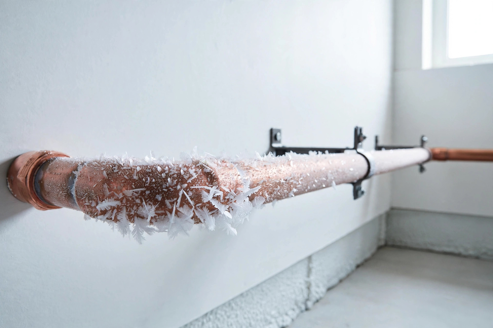

Burst pipes in winter: what's covered and what voids your claim

Water damage from burst pipes is one of the most common — and most misunderstood — winter claims in Canada. The same burst pipe can be fully covered or completely denied depending on a handful of facts about how it happened. The rule that decides is "sudden and accidental": damage that arrives without warning, from a system you were maintaining, is generally covered; damage that crept up through neglect is not.
Covered vs. not: the scenario table
| Scenario | Typically covered? | Why |
|---|---|---|
| Frozen pipe bursts during a cold snap despite normal heating | Yes | Sudden and accidental; you took reasonable steps |
| Pipe bursts in a heated part of the home | Yes | The standard case insurers expect to pay |
| Furnace dies, pipes freeze, water damage follows | Damage yes, furnace no | The water damage is covered; the furnace repair is a maintenance issue |
| Home left unheated for weeks in winter | No | Failure to take reasonable precautions |
| Slow leak corrodes a wall over months | No | Gradual damage, not sudden |
| Rusted, unmaintained pipes burst | No | Wear and tear / maintenance issue |
| Heating intentionally turned off | No | Explicit exclusion in standard policies |
The pattern: insurers pay for bad luck, not for deferred maintenance. Everything in the "no" column is a version of the homeowner knowing — or being expected to know — that trouble was coming.
The "reasonable steps" standard, made concrete
Every source repeats the phrase "reasonable steps to prevent freezing" without saying what counts. Here's the October routine that satisfies it, drawn from insurer and restoration guidance:
- Keep the heat on through cold weather — including while you're travelling. This is the single most important step.
- Let a faucet trickle during extreme cold so water keeps moving through vulnerable runs.
- Open sink cabinets on exterior walls so warm air reaches the pipes inside.
- Insulate exposed pipes in crawl spaces, garages, and unheated areas.
- Know where your main shutoff is — and make sure everyone in the house knows too. If a pipe bursts, minutes matter.
None of this is exotic. That's the point: "reasonable" means the ordinary things a careful homeowner does. Document that you did them — a photo of the insulated pipes, the thermostat setting while you were away — because after a claim, the question is what you can show, not what you remember.
The snowbird rule: vacant homes in winter
Travelling for the winter? Read your policy's vacancy clause before you lock the door. Standard policies commonly treat a home left unoccupied for more than about 30 days as vacant — and if you haven't informed your insurer, coverage can be voided entirely. The fix is simple: tell your insurer about the trip, keep the heat on, and arrange regular check-ins by someone who can spot a problem (a neighbour, a friend, a property-check service). The check-ins matter twice: they catch leaks early, and they prove the home wasn't simply abandoned to the cold.
When the furnace dies in January: the sequence that matters
This is the scenario nobody walks through. Your furnace fails during a cold snap. Here's the order of operations:
- Protect the pipes first. If the heat is out and temperatures are dropping, shut off the main water supply and drain the pipes. Use alternative heat — a fireplace, space heaters — to buy time.
- Get the furnace fixed. That repair bill is yours: insurers treat a broken furnace as a maintenance issue, not a covered peril.
- The water damage from frozen pipes is a separate question — and it's generally covered, because you took reasonable steps once you knew the heat was out.
The logic holds together: the insurer won't pay to fix your furnace, but it will pay for the water damage that a dead furnace caused — as long as you acted like someone trying to prevent it.
The decision framework: if you discover water, ask three questions in order — Is the heat on and was it on? (if no, coverage is at risk) · Was this sudden or has it been leaking a while? (gradual = not covered) · Have we been away more than 30 days without telling the insurer? (if yes, call your broker before you assume anything). Three yes-safe answers means you're very likely in covered territory.
The short version
- Sudden, accidental bursts in heated areas are covered; neglect, gradual leaks, and turned-off heat are not.
- "Reasonable steps" means: heat on, pipes insulated, shutoff known, check-ins arranged.
- Away more than ~30 days? Inform your insurer first.
- Furnace breakdown: the water damage is covered, the furnace repair isn't.
General information only — not financial advice. Every insurer weights these factors differently, and rules vary by province. Talk to a licensed insurance professional about your specific policy.
Keep readingNext: Filing a winter damage claim, step by step →